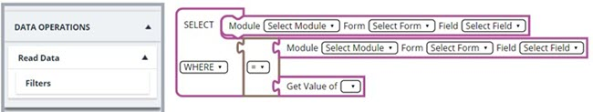

Modifying Dynamic Messages by Inserting a Field of Different Form
-
To search and retrieve the appropriate field information from other modules or forms, perform the following steps:
- Click Read Data.Note:The Read Data feature retrieves the appropriate information from other modules or forms using a reference field that is common between the source and the destination form.The following screen is displayed on the right pane of the screen.
Figure 1. 
- To search the appropriate information from the destination form, in the SELECT field, define the appropriate values in the Select Module, Select Form, and Select Field.Note:The SELECT field searches for the defined values in the Select Field from the Select Form that belongs to the Select Module entities.
- To define the relationship between the destination form and the source form, in the WHERE field, define the appropriate values in the Select Module, Select Form, and Select Field.Note:
- The WHERE field acts as the reference identifier between the source and the destination form.
- The WHERE field retrieves the defined values from the Select Field of the Select Form that belongs to the Select Module entities.
- To define the identifier of the record, click Filters, and then use the appropriate filters as applicable:Note:Once added, you can remove the filter by dragging and dropping it to
 in the center right corner of the screen.
in the center right corner of the screen.-
Get Value of: To retrieve a list of identifiers from the source form, perform the following steps:
- Drag and drop the Get Value of filter in the double quoted empty field.Note:The Get Value of filter defines which identifier or reference field should be validated from the source form to retrieve a field from the destination form.
Figure 2.  - Place the cursor in the empty field adjacent to the Get Value of filter.The Search Fields bar is displayed.
Figure 3. 
- To add fields to the Get Value of filter, search the field name in the Search Fields bar, and select the appropriate field when it is displayed.
- Drag and drop the Get Value of filter in the double quoted empty field.
-
Resolve Value of: To retrieve the common attributes between the source and the destination form, perform the following steps:
- Drag and drop the Resolve Value of filter in the double quoted empty field.Note:The Resolve Value of filter consists of Parent Module Id, Module ID, Project details, and user details that are used as identifiers.
Figure 4. 
- Click the Select Resolver field adjacent to the Resolve Value of filter.
Figure 5. 
- From the Select Resolver drop-down list, select the appropriate attributes.
- Drag and drop the Resolve Value of filter in the double quoted empty field.
-
Get Value of: To retrieve a list of identifiers from the source form, perform the following steps:
- Click Read Data.